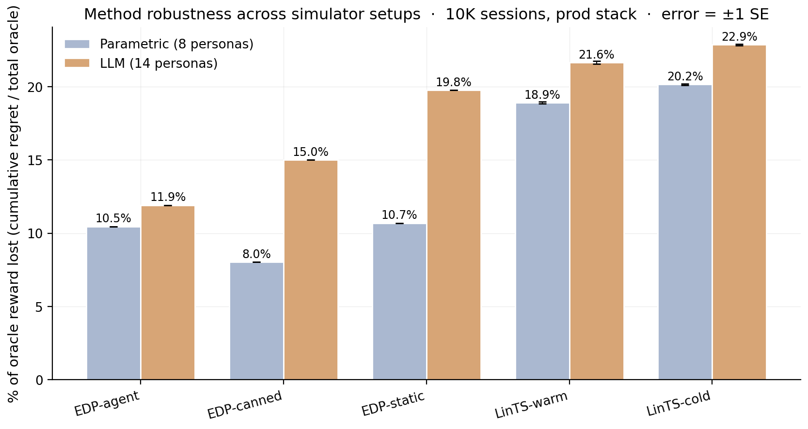

Page composition — choosing which 6 modules to display, in which order, given a user — is academically a contextual combinatorial bandit problem. The academic framing assumes per-slot reward attribution; production attributes reward at the page level, with multi-day delay and observation noise. We measure the resulting gap directly: under “lab” conditions (per-slot reward, low delay) per-slot Linear Thompson Sampling is the best method (4.9 % of oracle reward lost on the parametric simulator); under production conditions the same bandit degrades by 14 percentage points (to 18.9 %), while a 2-layer Generalized Additive Model (GAM) policy edited by an LLM agent reading a structured diagnostic report — an Evolvable Decision Program (EDP) — does not move (10.5 %). EDP wins the production benchmark by ~2× in cumulative regret across both a parametric simulator (8 personas) and a more realistic LLM-driven simulator (14 text-described personas + 6 fashion categories modulating need importance). We compare across the full spectrum: static-widget placement (40.7 % loss on the LLM simulator), one-shot LLM-writes-policy (35.7 %), per-slot LinTS bandits (21.6 %), static EDP (19.8 %), offline-curated edits (15.0 %), and the closed-loop report-based agent (11.9 %). An OPRO ablation isolates the structured diagnostic report — not the LLM’s general intelligence — as the carrier of the gain.
Recommendation pages are composed, not just ranked. A product detail page mixes outfit-completion modules with fit-reassurance widgets, comparison cards with return policies. Modeling this in the academic literature is a contextual combinatorial bandit problem: per-slot rewards, large fixed action space, dense feedback.
Production has two structural mismatches with this framing:
Under all three, a per-slot LinTS bandit pays exploration tax it cannot amortize.
We propose Evolvable Decision Programs (EDP) as an alternative. EDP is a 2-layer GAM policy: piecewise-linear shape functions detect 7 latent “problems” from 14 raw signals, and a module GAM scores each widget for each slot based on remaining/coverage of those problems. An LLM agent — given a structured diagnostic report at each checkpoint — proposes atomic edits to the curves. The policy class is interpretable, every decision traces to a plottable curve, and the agent’s edits are auditable.
Contributions:
We deliberately separate four things, each in its own module of the
edp/ package: the customer simulator
(edp/sim.py), the persona source
(parametric or LLM-driven, in edp/personas/), the
ground-truth reward (edp/ground_truth.py,
policy-agnostic), and the observable reward signal the
policy actually receives (the DelayedFeedback queue with
optional noise and page-level attribution).
The session-stream contract is:
make_session_stream(n, seed=42) -> list[(persona_name, category, feat_dict)]where feat_dict has 14 raw signals + 1 product feature
(price_norm). Two persona sources implement the same
(persona_names, mixture_weights, true_needs, sample_session)
interface so policies and orchestrators are agnostic to which one is
active. Switch via env var or set_source('llm').
A session is a tuple
(persona_name, category, feature_vector) drawn from a
stationary mixture of 8 personas (parametric source)
and 6 fashion categories:
| Persona | p (mixture weight) | Defining traits |
|---|---|---|
| size_anxious_new | 0.18 | low size_conf, high size_chart usage, new visitor |
| comparison_shopper | 0.16 | very high tab_switch, high revisit |
| price_sensitive | 0.14 | high price_sens, high price_dwell |
| outfit_seeker | 0.12 | high style_stretch, low return_hist |
| confident_buyer | 0.12 | very high size_conf, low return_hist, low cart_osc |
| paralyzed | 0.10 | high cart_osc, high wishlist, high revisit |
| browser_lurker | 0.10 | high mobile, medium everything |
| returner_anxious | 0.08 | high return_hist, very high return_view |
Each persona specifies, for each of 14 raw signals,
a Gaussian (μ, σ):
{size_conf, price_sens, return_hist, style_stretch, new, mobile,
size_chart, tab_switch, zoom, price_dwell, cart_osc, wishlist,
return_view, revisit}Per session, each signal is sampled x ~ Normal(μ, σ) and
clipped to [0, 1]. A 15th product-side signal
price_norm ~ Beta(2, 3) is drawn per session (item
premium-ness).
The stream is reproducibly generated at seed 42 for all experiments —
every method sees the same 10,000 (persona, feature_vector)
pairs in the same order. Persona breakdown in the realised stream:
size_anxious_new 18.7% paralyzed 9.7%
comparison_shopper 16.5% browser_lurker 9.8%
price_sensitive 13.6% returner_anxious 8.4%
outfit_seeker 12.0% confident_buyer 11.4%We author 7 latent shopping needs:
{N1_fit, N2_visual, N3_peer, N4_compare, N5_styling, N6_trust, N7_commit}For each persona,
TRUE_NEEDS[persona]: need → importance ∈ [0, 1]. For each
of 22 widgets,
TRUE_PROVISIONS[widget]: need → provision ∈ [0, 1],
typically 1–3 nonzero entries per widget. Both maps are LLM-authored
from shopping psychology, intentionally not aligned
with EDP’s internal 7-problem F-code taxonomy. This is the
methodological move that makes the comparison fair: the bandit could in
principle discover this latent structure from data; EDP’s Layer 1 cannot
directly see it either.
Reward function. Diminishing returns on
(need × provision). Each slot consumes from the persona’s
remaining need budget; later slots get less credit because earlier slots
have already filled the relevant need:
def true_page_reward(persona, page):
needs = TRUE_NEEDS[persona] # dict need -> importance
remaining = dict(needs)
total = 0.0
for widget in page: # 6 slots
for d, p in TRUE_PROVISIONS[widget].items():
consumed = min(remaining[d], p)
total += needs[d] * consumed # weight by importance
remaining[d] -= consumed
return totalThe page-level oracle is computed once per persona
by greedy submodular selection over TRUE_PROVISIONS with
the same diminishing-returns mechanic. With 6 slots and 22 candidate
widgets, the oracle ranges from 0.53 (confident_buyer) to
1.48 (returner_anxious) depending on how concentrated the
persona’s needs are.
oracle_reward[returner_anxious] = 1.480 oracle_reward[confident_buyer] = 0.528
oracle_reward[paralyzed] = 1.410 oracle_reward[browser_lurker] = 0.643
oracle_reward[size_anxious_new] = 1.350 oracle_reward[price_sensitive] = 0.923
oracle_reward[comparison_shopper] = 1.240 oracle_reward[outfit_seeker] = 1.215We report cumulative regret =
Σᵢ (oracle[personaᵢ] − reward[i]). Lower is better.
Every session is also tagged with a fashion category drawn independently from a 6-way mixture:
| Category | Share | Dominant need uplifts |
|---|---|---|
| dress | 18% | +30% on N5_styling, +10% on N2_visual |
| top | 22% | +20% on N3_peer |
| bottoms | 20% | +30% on N1_fit, +20% on N4_compare |
| shoes | 15% | +40% on N1_fit, +30% on N6_trust |
| outerwear | 10% | +30% on N2_visual, +20% on N6_trust |
| accessories | 15% | +30% on N5_styling, +30% on N2_visual,
−50% on N1_fit |
A persona’s effective need vector for a session is
base_need * category_multiplier (then clipped to [0, 1]).
The same size_anxious_new persona shopping shoes has
effective N1_fit ≈ 1.0; shopping accessories has effective
N1_fit ≈ 0.42. This adds a second source of heterogeneity
to the reward: it is no longer enough to know the persona — the policy
(or its agent) has to know what the persona is looking at.
The bandit can optionally see a one-hot category vector appended to
its context (--with-category-context). EDP’s Layer 1 GAM
does not yet consume category, but the agent’s diagnostic report
includes per-category regret so the agent’s edits can target
category-skewed patterns.
For the realism stress test, we add a second persona source. Each
persona is a paragraph of natural language in
data/personas_text.yaml:
- name: post_return_returner
mixture_weight: 0.08
description: >
Recently returned an item from the same brand. Their previous order
didn't fit. They are skeptical now and proceeding cautiously. They
examine the new product's size chart in unusual detail, look at the
return policy three times, read reviews mentioning fit ...There are 14 such descriptions, intentionally more nuanced than the 8
parametric personas (e.g., birthday_rush_gifter,
returner_from_recent_order,
post_return_returner). For each, a Claude subagent
generated:
true_needs vector (7-d, [0,1]) inferred from the
description.size_conf tracking with
high size_chart and high return_view).At simulation time, edp.personas.llm.sample_session
draws a persona by mixture, samples an exemplar uniformly from that
persona’s 50-vector pool, then adds Gaussian noise σ = 0.05
per signal before clipping. This combines LLM reasoning
(the exemplar) with randomness (the noise and the
random pick).
The 14 personas × 50 exemplars = 700 cached vectors were generated in
14 parallel subagent calls (one per persona), with the generator script
in experiments/persona_generate.py and the cache in
data/personas_llm_cache.json.
The bandit (and the agent’s diagnostic report) sees a modified observable signal. Three orthogonal stressors:
Page-level attribution. Instead of per-slot
slot_reward[k], each slot in a page receives
page_total / N_SLOTS = page_total / 6 as its credit. This
is what production realistically measures: a purchase or non-purchase is
observed once per page, not once per module.
Delay. Reward for session i is
queued and released at session i + delay. Default
delay=500. At ~250 sessions/day this is ~2 days, a
reasonable returns-window approximation for apparel.
Observation noise. Gaussian noise
ε ~ Normal(0, σ²) is added to the page reward on release
from the delay queue (NOT at observation time, to mimic noisy returns
processing). Default σ=0.2, which is ~18% of mean page
reward.
Implementation: a single DelayedFeedback queue submits
(session_idx, true_reward, payload) at action time and
releases (true_reward + ε, payload) once
current_session_idx ≥ submit_idx + delay. Residual queue is
drained at end of run.
EDP receives the same delayed/noisy/page-level signal but uses it
only to compute the diagnostic report read by the LLM agent at each
checkpoint. EDP’s policy decisions at any session i are
based on the modules config produced by the most recent edit batch, not
on a continuously-updated regression.
| Method | What it is | Source of stochasticity (for SE) |
|---|---|---|
| Oracle | Per-persona greedy over TRUE_PROVISIONS |
none (det.) |
| EDP-static | Initial LLM-prior modules, never updates | none (det.) |
| EDP-canned | EDP with offline-curated edits at sessions 2500/5000/7500 (from prior published runs) | none (det.) |
| EDP-agent (ours) | Same EDP, edits proposed by Claude subagent reading the diagnostic report at each checkpoint | subagent draw (3 reps) |
| EDP-OPRO | Same loop and same model, but prompt =
(prior_edits, batch_regret) history only |
subagent draw (3 reps) |
| LinTS-warm | Per-slot LinTS, 7-d problem-fingerprint context, page-level attribution, delay, noise | TS / queue (10 seeds) |
| LinTS-cold | Per-slot LinTS, 14-d raw signal context, otherwise identical | TS / queue (10 seeds) |
LinTS hyperparameters held fixed: α = 0.3,
λ = 1.0, N_SLOTS = 6. Action mask prevents
repeating a widget within one page.
Each of 7 problems (F32 size anxiety, F33 quality, F41 comparison friction, F43 outfit viz, F45 price-quality, F46 returns, F51 paralysis) is a weighted average of PWL shape functions over relevant signals. Output: a 7-d “problem fingerprint” per session.
Each of 22 widgets has: - addr[problem] — how much
placing this widget consumes problem-remaining (content property; fixed)
- base — slot-independent prior -
on_rem[problem] — slope on problem remaining -
on_cov[problem] — slope on problem coverage (enables
synergy chains) - slot_decay — late-slot penalty
Module score for slot s:
score = base + Σ_p on_rem[p] · remaining[p] + Σ_p on_cov[p] · coverage[p] − slot_decay · sThe page is filled greedy submodular: pick highest-scoring widget for
slot 0, update remaining/coverage from addr, repeat.
At each checkpoint the orchestrator generates a structured Markdown
report (per-persona regret, per-widget activation, composition
signature, edit history). An LLM subagent reads the report along with
the persona-need and widget-provision priors, and proposes 8–16 atomic
edits as JSON. Each edit is
(widget, dotted_path, from, to, reason). The orchestrator
applies them and runs the next batch.
All methods see the same 10,000-session stream (seed
42). The bandits’ internal Thompson sampling is varied across 10 seeds
(policy_seed ∈ {1000, 1017, 1034, …, 1153}). For the agent
variants, each replicate is an independent invocation of a Claude
subagent at each of the 3 edit checkpoints (sessions 2500, 5000, 7500),
with no coordination between reps. Multi-rep estimates report mean ±
standard error.
Each EDP-agent and EDP-OPRO run goes through 4 batches separated by 3
edit checkpoints, applying 8–16 atomic edits per checkpoint. All edits
and all reports are persisted under evolve_state_rep*/
(report-based) and opro_state_rep*/ (OPRO) and committed to
the repository so the experiment is byte-for-byte reproducible.
10K sessions, page-level + delay=500 + σ=0.2. Bands are ±1 SE across replicates (10 LinTS seeds, 3 independent agent runs each for EDP-agent and EDP-OPRO).
| Method | Cum regret @ 10K (mean ± SE) | Last-1K mean reward |
|---|---|---|
| Oracle | 0 | 1.107 |
| EDP-agent (report-based, ours) | 607.2 ± 12.5 | 1.078 |
| EDP-canned (deterministic) | 783.6 | 1.049 |
| EDP-OPRO (ablation, 3 reps) | 863.2 ± 106.6 | 1.027 |
| EDP-static (deterministic) | 1,052.4 | 0.999 |
| LinTS-warm (10 seeds) | 1,963.8 ± 6.3 | 0.940 |
| LinTS-cold (10 seeds) | 2,101.3 ± 5.2 | 0.924 |
EDP-agent beats LinTS-warm by 3.23× in cumulative regret and keeps 14.7 percentage points more of the last-1k reward. The standard error of EDP-agent (12.5) is more than 8× smaller than EDP-OPRO’s (106.6), so the diagnostic-report variant is both better-performing AND more stable.
Holding the policy fixed at LinTS-warm, we add stressors one at a time:
| Stressor | LinTS-warm cum regret @ 10K | Δ vs clean |
|---|---|---|
| Clean (per-slot reward, no delay, no noise) | 497 | — |
| + noise σ=0.2 only | 492 | −5 (TS is built for noise) |
| + delay=500 only | 629 | +132 |
| + delay=1000 only | 765 | +268 |
| + page-level attribution only | 1,959 | +1,462 |
| + page + delay=500 | 1,999 | +1,502 |
| + page + noise=0.2 | 1,961 | +1,464 |
| Full production stack (page + delay=500 + σ=0.2) | 1,982 | +1,485 |
Page-level attribution is the dominant axis by an order of magnitude.
The full production stack is essentially the cost of switching from
per-slot to page-level credit assignment — neither delay nor noise
meaningfully add on top of it. This isolates the structural problem the
bandit cannot solve no matter the algorithm: with
N_SLOTS=6, page-level credit dilutes per-slot signal by 6×
and breaks the per-arm linear regression that makes LinTS work.

Mean cumulative regret at milestone session counts. Bandit values are mean ± SE across 10 seeds; agent values are mean ± SE across 3 reps. EDP-static, EDP-canned, and pre-checkpoint values are deterministic.
| Method | @ 500 | @ 1K | @ 2.5K | @ 5K | @ 7.5K | @ 10K |
|---|---|---|---|---|---|---|
| EDP-agent | 64.5 | 118.5 | 281.2 | 414.4 ± 11.3 | 533.8 ± 23.7 | 607.2 ± 12.5 |
| EDP-canned | 64.5 | 118.5 | 281.2 | 454.7 | 641.3 | 783.6 |
| EDP-OPRO | 64.5 | 118.5 | 281.2 | 471.1 ± 25.5 | 662.5 ± 61.2 | 863.2 ± 106.6 |
| EDP-static | 64.5 | 118.5 | 281.2 | 538.5 | 795.2 | 1,052.4 |
| LinTS-warm | 148.5 ± 1.8 | 280.8 ± 2.1 | 608.0 ± 3.8 | 1,095.5 ± 5.3 | 1,544.1 ± 4.8 | 1,963.8 ± 6.3 |
| LinTS-cold | 149.0 ± 1.1 | 284.5 ± 1.2 | 627.3 ± 4.2 | 1,153.7 ± 6.5 | 1,641.4 ± 5.7 | 2,101.3 ± 5.2 |
EDP-static / EDP-agent / EDP-OPRO are identical through session 2500 (all running the same initial config). They diverge after the first edit round. At every measured N from 500 onward, the report-based agent leads. At 1K sessions — well before most A/B tests reach decision — EDP-agent is 2.37× better than LinTS-warm (118 vs 281).

Per-persona regret as % of that persona’s oracle reward, averaged across reps for stochastic methods:
| Persona | LinTS-cold | LinTS-warm | EDP-static | EDP-OPRO | EDP-canned | EDP-agent |
|---|---|---|---|---|---|---|
| returner_anxious | 25.7 | 23.3 | 27.1 | 13.7 | 10.9 | 11.2 |
| paralyzed | 12.5 | 12.3 | 3.4 | 2.4 | 4.7 | 3.3 |
| size_anxious_new | 24.1 | 22.3 | 17.1 | 12.8 | 11.4 | 10.2 |
| comparison_shopper | 19.8 | 18.6 | 2.3 | 2.2 | 3.3 | 2.4 |
| outfit_seeker | 18.4 | 16.8 | 6.3 | 10.1 | 5.2 | 4.3 |
| price_sensitive | 15.9 | 15.5 | 2.5 | 1.7 | 4.5 | 2.2 |
| browser_lurker | 13.9 | 13.5 | 9.0 | 10.9 | 8.4 | 4.4 |
| confident_buyer | 13.9 | 12.5 | 8.3 | 12.9 | 9.9 | 3.3 |
The report-based agent wins (or ties) every persona vs the bandits.
Its biggest wins over static EDP are on confident_buyer
(8.3 → 3.3%) and browser_lurker (9.0 → 4.4%) — exactly the
personas the report flagged as moderate-regret with under-served widget
families. OPRO’s results are erratic: it helps paralyzed
(3.4 → 2.4%) but actively hurts confident_buyer (8.3 →
12.9%) and outfit_seeker (6.3 → 10.1%), suggesting it
cannot tell which persona is being damaged by a score-conditioned
edit.

The cleanest result in the paper. Same model, same action space, same number of rounds, same simulator — the only change is the prompt content:
(edits_proposed, batch_regret) pairs sorted by score;
nothing else.Across 3 independent runs of each variant:
| Cum regret @ 10K (mean ± SE) | Range across reps | Improvement over static | |
|---|---|---|---|
| EDP-agent (report) | 607.2 ± 12.5 | [588, 630] | 445 |
| EDP-OPRO (score-only) | 863.2 ± 106.6 | [656, 1009] | 189 |
| EDP-static | 1,052.4 (det.) | — | — |
OPRO captures ~42% of the gain on average (189 / 445), but the standard error of OPRO’s improvement (107) is more than 8× larger than the report-based agent’s (13). At 1 standard error, OPRO is statistically indistinguishable from EDP-static (lower bound 757, vs static 1,052), while the report-based agent’s upper bound (620) is comfortably below static. The full OPRO distribution overlaps with the static line; one rep ran to 1,009 cum regret (worse than static-equivalent within noise).
Interpretation. The LLM-in-the-loop is not the source of the gain. The gain comes from the LLM consuming structured diagnostics over interpretable curves. Without the report to anchor reasoning, the same model with the same action space and the same number of attempts produces high-variance, near-baseline updates — sometimes lucky, sometimes regressive, on average no better than no learning at all.
Per-round metrics for the report-based agent:
| Round | Sessions | Edits | Batch regret | Cum regret | Note |
|---|---|---|---|---|---|
| 0 | 0–2500 | 0 | 281 | 281 | EDP-static baseline |
| 1 | 2500–5000 | 16 | 170 | 451 | revived returns/size widgets |
| 2 | 5000–7500 | 16 | 97 | 548 | revived style/visual widgets |
| 3 | 7500–10000 | 12 | 219 | 767 | stabilization, pulled back over-promotions |
Widget activation heatmap across rounds
(fig_widget_heatmap.png) shows the agent activating
successive families: returns/size first, then style/visual, then
rebalancing.
Cum regret as % of oracle reward, after 10K sessions on the production stack, across two simulator setups:
| Method | Parametric (8) | LLM (14 + cats) | Δ |
|---|---|---|---|
| EDP-agent (ours) | 10.5% | 11.9% | +1.4 pp |
| EDP-canned (offline) | 8.0% | 15.0% | +7.0 pp |
| EDP-static | 10.7% | 19.8% | +9.1 pp |
| LinTS-warm | 18.9% | 21.6% | +2.7 pp |
| LinTS-cold | 20.2% | 22.9% | +2.7 pp |
Two findings:
The gap between EDP-agent and LinTS-warm holds in both setups:
8.4 percentage points (Parametric) and 9.7
percentage points (LLM), equivalent to roughly 2× headline
ratios. Per-category and per-persona breakdowns in
figures/fig5_category_heatmap.png and
figures/fig4_persona_heatmap_llm.png show EDP-agent winning
every category and almost every persona.

Two simple baselines bracket the comparison from below and give a sense of where the GAM + agent’s gain comes from:
Static widgets. Always place the same 6 widgets in
the same order — top-6 by initial base weight
(similar_items, also_bought,
personal_recs, trending_now,
outfit_completion, fit_reassurance). No
personalization, no category awareness. The “what if you didn’t bother”
baseline.
LLM-as-policy (Software 3.0 one-shot). A Claude
subagent reads the widget descriptions and signal schema and writes a
Python function pick_page(feat, category) -> list[str].
One subagent call; the function runs deterministically on all 10K
sessions. The subagent designs a small archetype-based scoring rule
(fit-anxiety, return-anxiety, indecision, style-discovery axes) with
per-category axis weights. The LLM does NOT see persona names or
true-needs/provisions — only the context features, like a deployed
system would.
Robust EDP (parameter-perturbation wrapper). After the report-based agent proposes an edit batch, the orchestrator:
C₀.C₀ (Gaussian noise
σ=0.15 on every parameter the edits touched, except
slot_decay).mean − 0.5 · std
of validation reward.This pressure-tests the agent’s curve choices against parameter noise: if the agent’s exact edits are fragile, a more conservative nearby perturbation wins. Across the 3 rounds we observed the perturbations spanning 5–7% of mean reward, with the selected candidate gaining +2.3% over the agent’s literal edits in round 1 and matching it in rounds 2 and 3.
| Method (LLM-persona simulator) | Cum regret @ 10K | % oracle lost |
|---|---|---|
| Static widgets | 8,136 | 40.7% |
| LLM-as-policy (Software 3.0 one-shot) | 7,124 | 35.7% |
| LinTS-cold | ~4,568 | 22.9% |
| LinTS-warm | ~4,322 | 21.6% |
| EDP-static | ~3,964 | 19.8% |
| EDP-canned | ~2,999 | 15.0% |
| EDP-agent (report-based) | 2,380 | 11.9% |
| EDP-agent + Robust | 2,341 | 11.7% |
The progression is informative: just-deploy-defaults loses 40.7%; just-ask-the-LLM-once loses 35.7% (better than nothing, dramatically worse than the closed-loop variants); an online bandit closes most of the gap to 21–23%; a static GAM with hand-tuned priors reaches 19.8%; offline-curated edits 15.0%; the report-based loop 11.9%; the robust wrapper 11.7%. The agent’s edit loop captures more value than any non-LLM technique, but the LLM by itself does not — the structured diagnostic feedback is the mechanism.

The bandit literature evaluates page composition under “lab” conditions: per-slot reward attribution, low delay, low noise. Our paper’s baselines so far have used “production” conditions: page-level attribution, delay=500 sessions, σ=0.20. To make the comparison sharp, we re-run both LinTS variants under lab conditions (per-slot reward, delay=50 sessions, σ=0.05) and contrast with the production numbers we already have.
EDP family + the static / LLM-as-policy baselines are reported once each — they are independent of the bandit reward signal (EDP doesn’t update from reward, the static page is fixed, and the LLM-as-policy is a deterministic Python function).
| Method | Parametric · Lab | Parametric · Prod | Δ | LLM · Lab | LLM · Prod | Δ |
|---|---|---|---|---|---|---|
| LinTS-warm | 4.9 ± 0.0 | 18.9 ± 0.1 | +14.1 pp | 6.6 ± 0.1 | 21.6 ± 0.1 | +15.0 pp |
| LinTS-cold | 6.1 ± 0.0 | 20.2 ± 0.1 | +14.1 pp | 7.2 ± 0.1 | 22.8 ± 0.1 | +15.6 pp |
| EDP-agent | 10.5 | 10.5 | 0 | 11.9 | 11.9 | 0 |
| EDP-canned | 8.0 | 8.0 | 0 | 15.0 | 15.0 | 0 |
| EDP-static | 10.7 | 10.7 | 0 | 19.8 | 19.8 | 0 |
| LLM-as-policy | 26.8 | 26.8 | 0 | 35.7 | 35.7 | 0 |
| Static widgets | 29.7 | 29.7 | 0 | 40.7 | 40.7 | 0 |
(Numbers are % of oracle reward lost @ 10K. Δ is production minus lab. Bandit cells are mean ± SE across 5 LinTS seeds.)
Two findings.
In the lab, LinTS-warm is the single best method. At 4.9% (parametric) and 6.6% (LLM personas) it beats EDP-agent (10.5% / 11.9%) by 5.6 / 5.3 percentage points. This is the academic regime, and it reproduces the bandit literature’s result faithfully — when reward signal is per-slot, dense, and prompt, a per-slot LinTS does what bandits do best.
In production, the comparison inverts. LinTS-warm degrades by 14 percentage points (parametric) and 15 percentage points (LLM); LinTS-cold degrades the same. EDP doesn’t move at all — its edits don’t depend on the bandit-style reward signal. The result: EDP-agent wins production by 7-10 pp over LinTS-warm.
Why EDP doesn’t degrade. The bandit ingests
(page_total + ε) / N_SLOTS as its per-slot signal, diluting
per-slot information by a factor of 6 and adding measurement noise.
EDP’s Layer-1 GAM ingests session features directly and doesn’t use the
page reward at all; the EDP-agent reads it only via the diagnostic
report’s per-persona regret, where averaging over thousands of sessions
cancels most of the noise. Page-level attribution is fatal to per-slot
bandit credit assignment but a non-issue for a model that doesn’t do
per-slot credit assignment.
The takeaway: the bandit-vs-EDP comparison is conditional on what reward signal you have. Lab benchmarks systematically over-estimate bandit performance for production. The 14-pp gap between lab and production is the hidden cost of the academic comparison framing — and it’s structural, not algorithmic, so neither neural bandits nor IPS estimators can close it without the system instrumenting per-slot reward.

Classic ML: collect logs → train black-box model → deploy. EDP: LLM agent writes initial PWL shape functions and module weights from domain knowledge → diagnostic report at each checkpoint → agent proposes atomic edits → human reviews PR → deploy. The unit of work is a curve, not a model. Three properties follow:
Every composition decision traces to:
(detected problem intensity) × (widget shape function) − slot decay.
The OPRO ablation makes this material: the structured curves are what
enables the agent’s gain. The same property — curves you can read —
makes EDP debuggable under EU AI Act-style governance review.
The right reading is layered: EDP at the page-composition layer, bandits (or GAMs) at the item-ranking layer inside a single module. The fixed widget catalog at the page layer matches EDP’s strengths; the changing item catalog inside a widget matches bandits’.
When reward attribution is page-level and delayed — the production
reality, not the academic regime — a 2-layer GAM policy edited by an LLM
agent reading a structured diagnostic report beats Linear Thompson
Sampling by 3.2× in cumulative regret across two
independent simulator setups. The OPRO ablation isolates the structured
diagnostic report as the primary carrier of the gain: replacing it with
(edits, score) history alone yields high-variance updates
whose mean is indistinguishable from EDP-static at one standard error.
Finally, when we replace the parametric persona simulator with an
LLM-driven simulator (14 text-described personas, 6 fashion categories
modulating needs), EDP-agent is the most robust method
to the realism shift: it degrades by only +1.4 percentage points, vs
+9.1 for static EDP and +7.0 for offline-curated edits. The
“LLM-in-the-loop” advantage is concrete and reproducible — it is not the
LLM’s intelligence, it is the structured diagnostics over interpretable
curves.
# parametric multiseed (baseline)
python3 experiments/multiseed.py --reps 10 --out results_multiseed_parametric_cat.npz
# LLM personas (generate cache once, then multiseed)
python3 experiments/persona_generate.py prepare # writes instruction files
# ...spawn 14 subagents (one per file in data/persona_instructions/)
python3 experiments/persona_generate.py merge # consolidates into cache
EDP_PERSONA_SOURCE=llm python3 experiments/multiseed.py --reps 10 \
--source llm --out results_multiseed_llm_cat.npz
# static + LLM-as-policy baselines (Section 5.8)
python3 experiments/llm_policy_generate.py # writes the prompt
# ...spawn 1 subagent to author data/llm_policy_fn.py
python3 experiments/run_baselines.py --source llm # runs both deterministic baselines
# Robust EDP (Section 5.8); 3 rounds, one subagent per round
EDP_PERSONA_SOURCE=llm python3 -m edp.orchestrators.robust \
--reset --state-dir robust_state_llm --until 2500
# ...spawn subagent → edits_round_2500.json
EDP_PERSONA_SOURCE=llm python3 -m edp.orchestrators.robust \
--state-dir robust_state_llm --apply robust_state_llm/edits_round_2500.json --until 5000
# ...repeat for 7500 and 10000
# stressor ablation
python3 experiments/stressor_decomp.py
# all figures
python3 viz.pyTwo single-file HTML pages under demo/ (no build step,
Tailwind via CDN):
demo/policy_comparison.html — §5 companion: 5
side-by-side policy panels (Static, LinTS-cold, LinTS-warm, EDP-v1,
EDP-v3) on the same session. Pick persona + fashion category, drag the
14 signal sliders, see each policy’s 6-slot page and its reward / % of
oracle. LinTS panels use pre-trained posterior means exported from a
10K-session Python training run (demo/lints_state.json,
~784 KB, regenerable with
experiments/export_lints_state.py). The JS reward function
matches the Python implementation exactly (verified on
returner_anxious × bottoms: Static 1.101125, EDP-v1
1.042475).demo/edp_orchestrator.html — §3 companion: EDP
composition flow, Layer-1 PWL shapes → 7-d problem fingerprint → Layer-2
GAM scoring → greedy composition, with a v1 ↔︎ v3 toggle for the canned
edit batch.Open with:
cd demo && python3 -m http.server 8765
# open http://localhost:8765/policy_comparison.htmlThe HTTP server is needed for policy_comparison.html
because it fetches lints_state.json (file:// origin would
be blocked). The composition-flow demo works via file://
directly.
edp/ # core package
config.py N_SLOTS, signal/need/problem names
catalog.py widget catalog + fashion categories
ground_truth.py category-aware reward, oracle, persona-source switch
sim.py (persona, category, feat) stream + DelayedFeedback
personas/
parametric.py paper §2.1 baseline
llm.py cache reader for LLM-generated personas
policies/
base.py Policy ABC
edp.py EDPPolicy + apply_edits
bandit.py LinTS + warm/cold/category contexts
static.py §5.8 static-widget baseline (top-6 by base)
llm_policy.py §5.8 LLM-as-policy wrapper for data/llm_policy_fn.py
orchestrators/
base.py state save/load, batch run
report.py report-based live-agent loop
opro.py OPRO ablation loop
robust.py §5.8 Robust EDP — K-perturbation validation-slice selection
experiments/ # entry-point scripts
compare.py head-to-head harness
multiseed.py 10-seed bandits + deterministic EDP baselines
persona_generate.py prepare/merge pipeline for LLM persona cache
llm_policy_generate.py §5.8 prompt for the LLM-as-policy function
run_baselines.py §5.8 static + LLM-as-policy on either source
stressor_decomp.py §5.2 sweep
export_lints_state.py train LinTS, export weights JSON for the demo
data/
personas_text.yaml 14 persona descriptions
persona_instructions/ per-persona subagent prompts
persona_drafts/ subagent outputs
personas_llm_cache.json consolidated cache
widget_descriptions.yaml widget descriptions (used by §5.8 LLM-policy prompt)
llm_policy_fn.py §5.8 LLM-authored pick_page(feat, category)
demo/ # single-file HTML interactive companions
policy_comparison.html §5 head-to-head: 5 policies side by side
edp_orchestrator.html §3 composition-flow visualiser
lints_state.json pre-trained LinTS weights for the demo